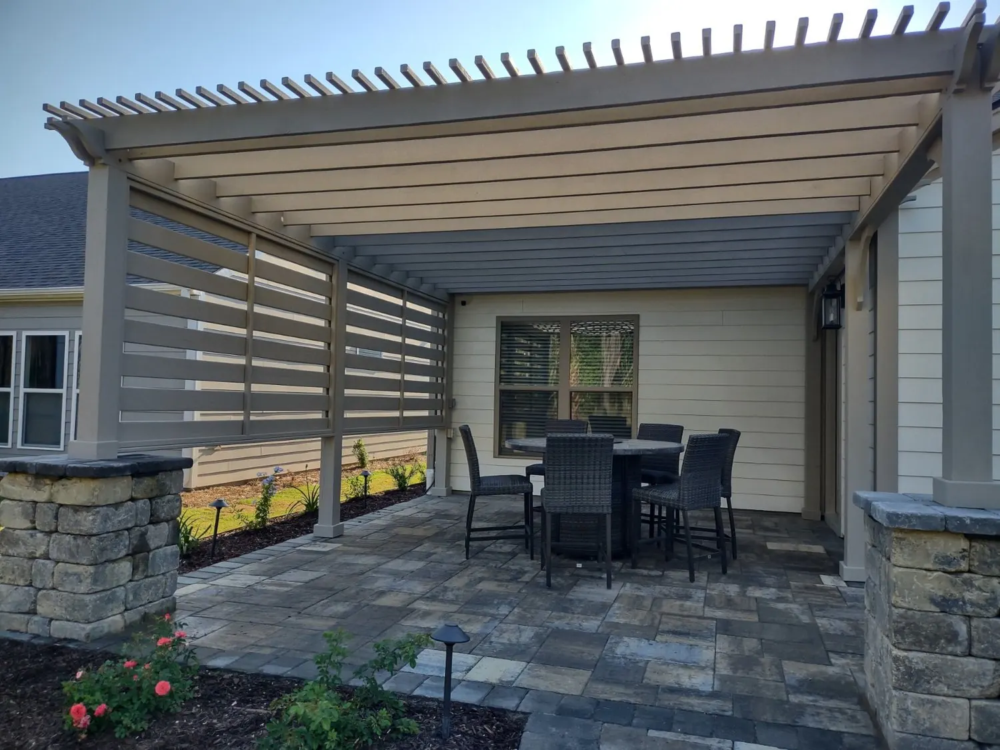
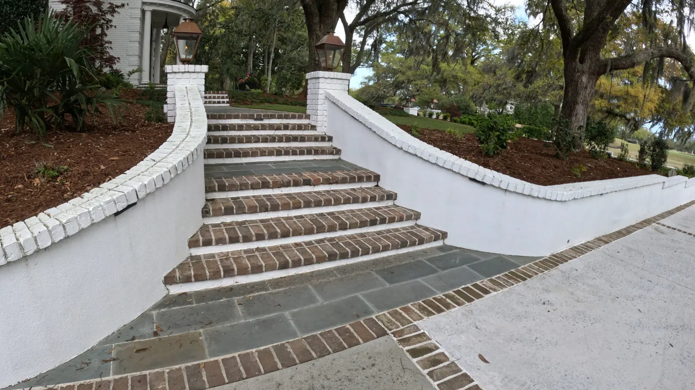
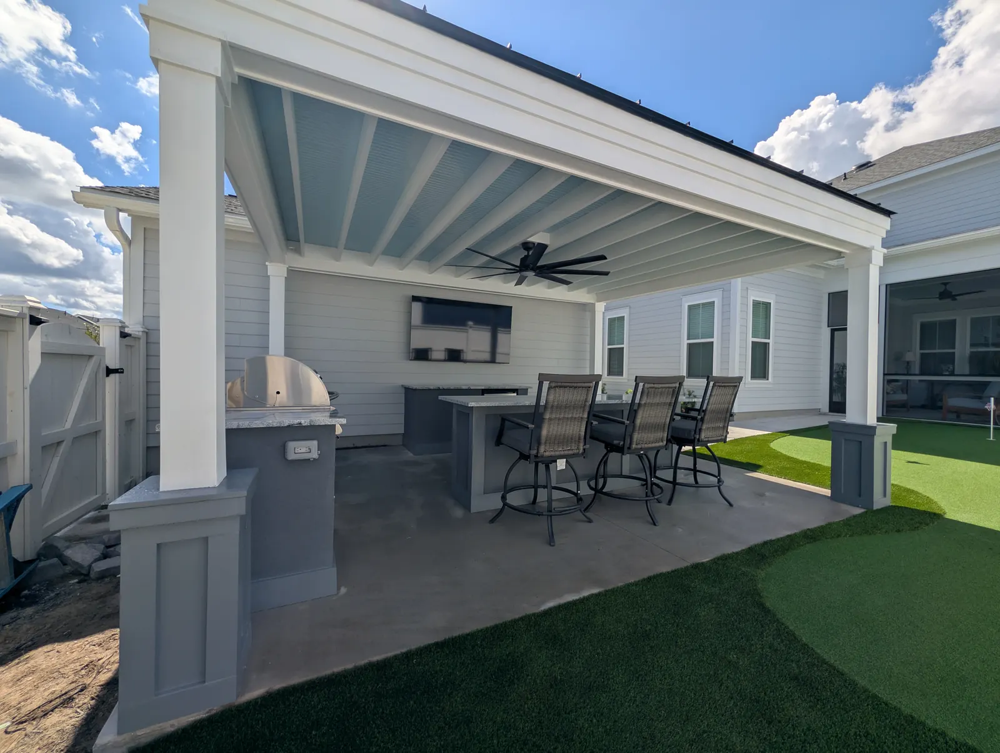

Design and Build Under One Roof

Most Projects Involve Two Companies
Most outdoor projects in Charleston involve at least two companies: someone who draws it and someone who builds it. We do both, and the reason that matters shows up in the parts of a project nobody photographs.

One Company, One Sequence
A Charleston front yard we finished recently needed retaining walls and stairs for the grade, a bluestone walkway with a brick border, layered planting and artificial turf where grass would not hold. Masonry, carpentry, grading, planting and turf — one crew list, one order of operations.
Nothing waited on another trade, and nothing had to be cut into after the fact. That is the practical value of design and build under one roof: the sequence is planned once and followed.
What Gets Designed Before Anything Is Dug
- Grade and drainage, because they cannot be fixed later without digging the yard up again.
- Irrigation, zoned from real water pressure and volume rather than a guess.
- Conduit, gas and water sleeves under anything about to be paved, for lighting, a future fire pit, a kitchen sink or an outdoor shower.
- Footings for any structure — continuous concrete footings, or a monolithic slab poured in one piece with its footings, which is stiffer and has no cold joints for water to work into.
Gas, electrical and plumbing are handled by our own team, along with the permits. Zach Cramer is our licensed residential builder.

Design to the Budget, Not Away From It
We ask for a budget early because most people genuinely do not know what a yard costs, and because a design drawn without one tends to produce a plan you have to abandon.
You get drawings, with 3D renderings available as an option at additional cost. If the full scope does not fit the number, we phase it — patio and structure first, kitchen next, planting and lighting last, with the conduit and gas run at stage one.
What we push back on is rushing. We would rather stage a project across two years than build something you will look at every day and wish you had done properly.
Frequently Asked Questions
Do you design and build, or just one?
Both, with our own crews. The consultation at your home is free, you get drawings, and 3D renderings are available at additional cost.
What has to be decided before the work starts?
Grade and drainage, irrigation zoning, any conduit, gas or water sleeves under future hardscape, and the footings for any structure. Those are the things that cannot be added later without undoing work.
Can a project be split into phases?
Yes, and we would rather phase than compromise. Patio and structure first, then the kitchen, then planting and lighting, with conduit and gas run at the first stage.
See It Built
Projects where we put this into practice.


Planning a Project of Your Own?
See everything we design and build, or get in touch to talk through your ideas with Doug and Zach.